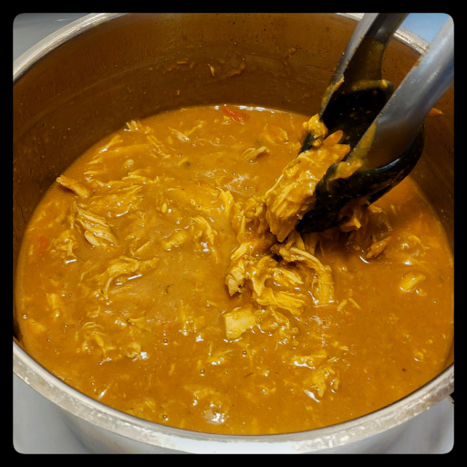

Use an immersion blender to make a smooth, fresh, tasty sauce from scratch.

pork roast, loin, or chops
olive, coconut, and/or sesame oil
onion
celery
salt
bell pepper
carrot
garlic
ginger
curry powder
turmeric
paprika (smoked and/or not)
cumin
fennel seeds
chili flakes
cilantro
corn starch
soy sauce
Put a kettle of water on to boil.
Use a pot just wide enough to fit the pork, so it can be covered with the minimal amount of water.
Dice an onion and celery, and saute in olive or coconut oil in the pot on medium heat. Salt to help soften the onions.
Dice and add a bell pepper.
Grate in a carrot.
If using fresh garlic and ginger, finely chop them, clear a spot on the bottom the pan, add a dollop of sesame or other oil, and fry the garlic and ginger for about a minute before stirring in.
Add curry powder, turmeric, paprika (smoked and not if you have both), cumin, fennel seeds, chili flakes, fresh chopped cilantro. Stir in.
Clear an opening in the bottom of the pot, and lay the pork in.
Cover with the previously boiled water, just up to the top of the pork. The amount of water added will determine the consistency of the sauce.
Add a tablespoon or so of soy sauce.
Cover the pot and simmer on low for about 45 minutes.
Remove from heat and let sit until it stops boiling.
Remove the pork from the pot and set aside on a chopping board.
Blend the sauce with an immersion blender. Be careful of splashes, it is hot.
Scoop out a cup or so of the liquid in a measuring cup and dissolve a heaped tablespoon of corn starch. Squish out all the lumps and add back to the sauce to thicken it.
Pull the pork apart into strands with forks, and add back to the pot.
Stir it all together and let rest for about 10 minutes.